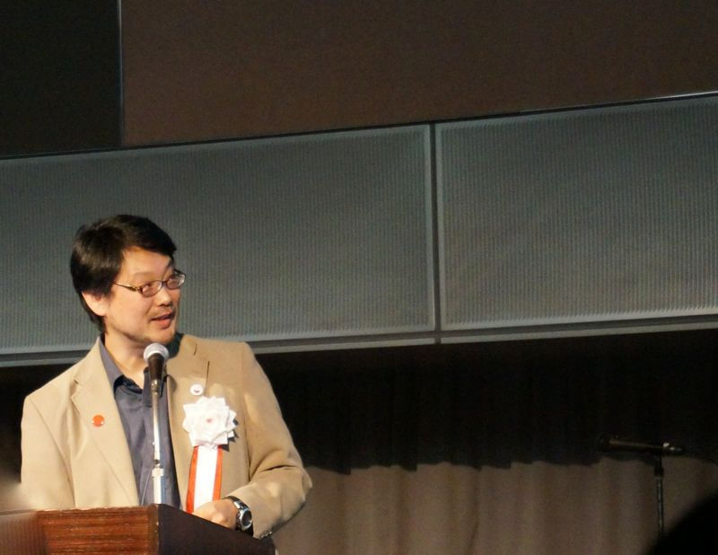
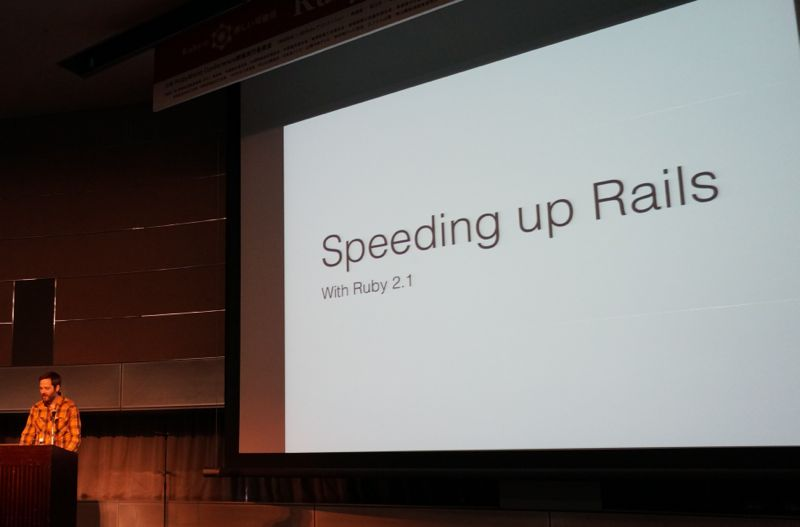
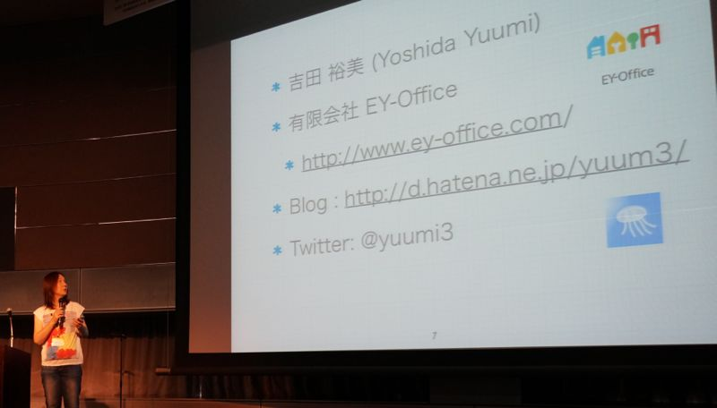
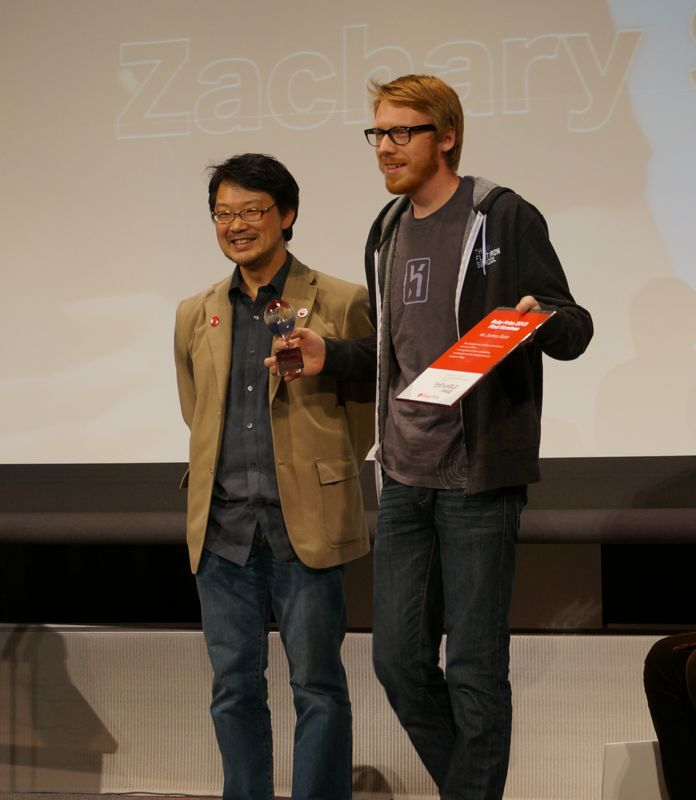
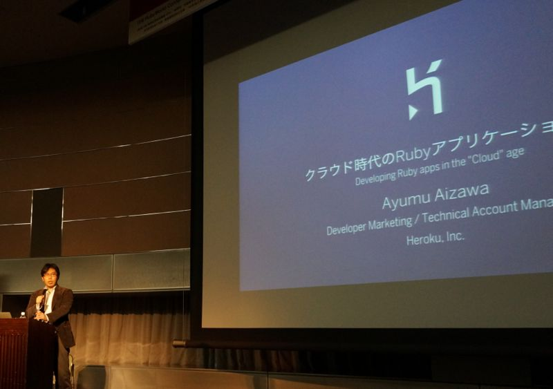
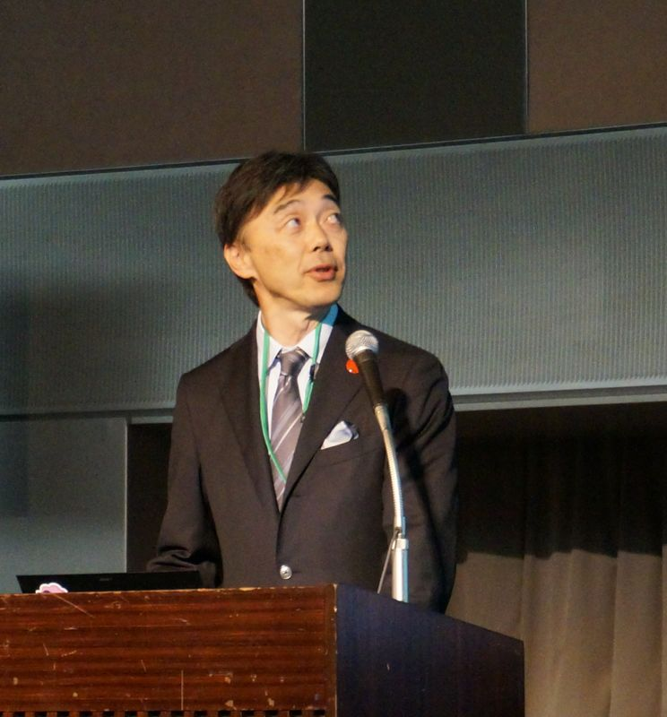

RubyWorld Conference 2013 参加レポート
RubyWorld Conference 2013 参加記
書いた人: @miyohide
RubyWorld Conference 2013 が 2013 年 11 月 21 日 〜 22 日の二日間にわたって、島根県松江市のくにびきメッセで開催されました。
今回が 5 回目の開催で、 Ruby 関連カンファレンスとして定着した感があります。この参加記では、行われたプログラムから一部を抜粋してその模様をお伝えしたいと思います。すべてのプログラムは Ustream にて録画されていますので、ここに記されていないプログラムにつきましては RubyWorld Conference 2013 公式ページにあるプログラムページから参照してください。
オープニングセレモニー
RubyWorld Conference の特徴として、県知事や市長、 経済産業省の担当者から挨拶があります。開会挨拶で Matz が「このカンファレンスは特徴的である」と述べられたように、カジュアルな格好をしたコミュニティ側の人達と、仕事で Ruby を使おうと考えているスーツなビジネス寄りの人たちが半々で参加されています。
島根 = Ruby という特徴付けを行い、オフィスや交通費の助成を行っている島根県や松江市の取り組みは、地域振興の一つとして非常に興味深いものでした。
基調講演 - 1 まつもとゆきひろ 『 Aiming the Moving Target 』

オープニングセレモニーに続いて行われた基調講演。 Matz が入社時に感じた開発の進め方に対する違和感について、ソフトウェア開発に対する間違った前提の説明と、未来予想について述べられました。
『ソフトウェアは Hard (難しい)』と述べられ、状況が容易に変化する昨今において、動く標的 (Moving Target) を狙う (Aiming) ためには、何度もチャレンジしてローコストで試せる試行錯誤の重要性について強調されていました。
Aaron Patterson 『 Speeding up Rails internals using unique Ruby techniques. 』

Ruby と Rails のコアコミッタである Aaron Patterson による発表。なんと、全編日本語で発表されてました。
ある一つのバグ報告に対して、 『実際にベンチマークを取ってみないと分からない』 という信念のもと、一つ一つていねいにベンチマークを取り、バグに向き合っていく姿は、非常に勉強になりました。
吉田裕美 『 Ruby 開発者を増やすための教育について - 8 年間の Ruby 教育で得た知見 』

ご自身の 8 年間に渡る Ruby の教育で得られた知見を元に、どのように Ruby の教育を行っているかを発表されてました。人気である 3 日間の教育コースでは、
- 1 日目に Ruby の文法やライブラリの説明などを実施
- 2 日目に Web アプリケーションの基礎知識や Rails の scaffold で生成するコードの解説
- 3 日目に Rails の応用的な機能を紹介して、 TDD の体験
を行うとのこと。 『 教育結果を定着させる 』 という思いから、実際にコードを書いてもらい受講者とのコミュニケーションを取りながら進めているとのことでした。
Ruby Prize 2013 表彰式
今年より始まった Ruby Prize 。これは、 Ruby 処理系および周辺のライブラリ・フレームワークの開発・発展・保守に直近 2 〜 3 年の間に顕著な貢献をされた方を対象として表彰する制度です。
最終ノミネートとして、 近永 智之さん、

Zachary Scott さん、 
柴田 博志さん

の 3 名が選ばれ、受賞者として近永さんが選ばれました。
近永さんは ruby-trunk-changes というブログを毎日更新されていたり、 Ruby 2.0.0 系のブランチメンテナとしてこのカンファレンス中でも Ruby の脆弱性対応版をリリースされるなど、毎日の地道な取り組みをされています。
基調講演 - 2 Tom Preston-Werner 『 The Internet Axiom : Escaping the Tyranny of Time and Space 』

GitHub CEO である Tom Preston-Werner による基調講演。インターネットがもたらした世界やサービスの素晴らしさを紹介した後、 GitHub 社が行っている仕事のやり方について説明されてました。
世界中の様々な場所にいる従業員とどのように思いを共有し、 GitHub の改善を行っているか。 Pull Request や Issue の活用はもちろんのこと、 Beer 30 という取り組みを行い、GitHub のビジョンを現地はもちろんのこと、遠隔地に住む従業員に対してもストリーミングや録画ビデオを通して共有していく姿勢は、新しい仕事への取り組みとして興味深かったです。
相澤 歩 『 クラウド時代の Ruby アプリケーション設計 』

Web アプリケーションを高速に、かつ継続的にリリースするための方法論である Twelve-Factor App から 「 コードベース 」 ・ 「 設定 」 ・ 「 ビルド、リリース、実行 」 の 3 点を紹介とその実現方法について述べられました。
Heroku に限らず、 Web アプリケーションを作る際には抑えておきたい方法論である Twelve-Factor App 。日本語訳も公開されてますので、しっかりと目を通しておきたいと思います。
クロージングセレモニー

クロージングセレモニーは、 NaCl の井上 浩さんによる RubyWorld Conference 2013 の振り返り。一つ一つの発表に対して、ステキな解説とツッコミを入れ、この二日間を振り返りました。最後に Aaron による提案でフライデーハグを撮影し、二日間のカンファレンスは盛況のうちに終了しました。
著者について
三好 秀徳 (@miyohide) : Yokohama.rb 所属。実況ツイートの中の人。数年前からランニングにハマっており、走れる Rubyist を目指している。